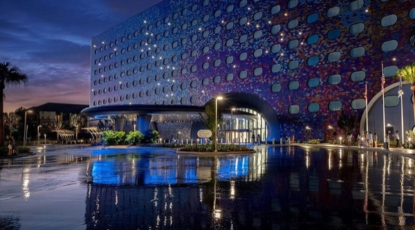

Travel
Going · Sat, Oct 3Southwest WN 3813Austin (AUS) 4:15 PM CT → Orlando (MCO) 7:45 PM ET
Hotel · Oct 3–7Universal Stella Nova ResortCheck in Sat, Oct 3 · Check out Wed, Oct 7

Home · Wed, Oct 7Southwest WN 4398Orlando (MCO) 2:05 PM ET → Austin (AUS) 3:55 PM CT
Weather
Forecast for Orlando from Open-Meteo. Updates when you’re online.
Hours at a glance
Regular park hours · Eastern| Park | Oct 4 | Oct 5–6 |
|---|
| Studios | 9 AM–5 PM | 10 AM–7 PM |
|---|
| Islands | 9 AM–8 PM | 9 AM–8 PM |
|---|
| Epic | 10 AM–8 PM | 10 AM–8 PM |
|---|
Add to your home screen
iPhone: open this link in Safari, tap Share, then Add to Home Screen. Enable Open as Web App if shown.
Your checkmarks
Saved on this device and browser, including when offline. They do not sync with other phones. Clearing browser data removes them.
Hotel & early entry
Bring your hotel room key every day. You need it for early admission.
Useful links